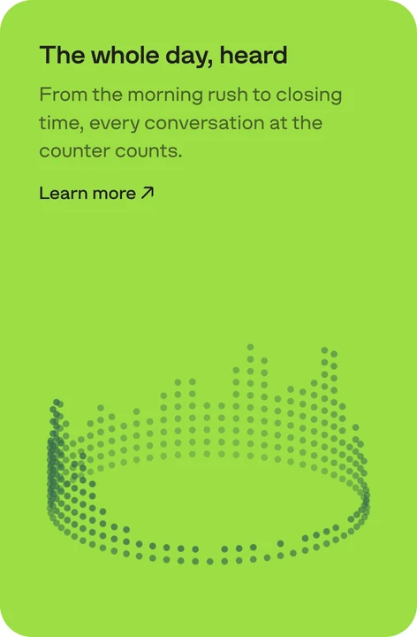

One small dot draws the technical side of the product: a voice, a day of talks, the place where the servers stand.
The picture
Each picture is one familiar signal, made of the dots it is already made of on a screen.
The voice line · Card

A day of talks · LimeThe Gulf on the globe · Dark
One signal per picture: a waveform, a globe, a ring of bars. Something people already read as data.
Simple forms only. Dots hold an arc, a sphere, a ring, a map. They don't hold a thin line drawing: an icon or an object in dots falls apart. Use 3D for those.
Spatial: every picture lies on a surface in space (an arc, a sphere, a ring) and is seen in perspective.
Still or slow. A globe turns once in two minutes, a ring in ninety seconds; a voice flickers like speech. Nothing jumps.
The dot
Size
2.4 px at 1× (the landing's), the same in every picture
Pitch
~7 px along a line, ~9 px across a surface
Depth
alpha only: far dots fainter, never smaller
Colour
one per picture, by the ground
One size, one colour. No bigger dots, no accent dots, no second colour, no shading.
The colour by the ground: ink on white, Floor and Card (it reads grey through its alpha); white on Primary Dark; Primary Dark on Lime.
No fades and no vignettes. The picture stops at its own edge or at the card's.
In a card
Text on one side, the picture on the other, running off the card's edge.
The text is a title, a line and a link, in Struve, without the marker.